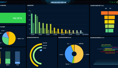

<main id="catalog">
  <div class="section-content">
    <aside class="menu-list">
      <el-tree highlight-current :data="regions" accordion :props="props" :load="loadNode" lazy="" @node-click="handleNodeClick"
        :render-content="renderContent" node-key="id" :default-expanded-keys="expandedKeys">
      </el-tree>
    </aside>
    <router-view class="router-catalog" :key="key"></router-view>
  </div>
  <section class="float-profile ">
    <div class="shengma">
      <a v-bind:href="sysObj.xuanfu1" class="share-link" target="_blank"><p>共享</p></a>
      <ul class="other-link">
        <li><a v-bind:href="sysObj.xuanfu2" class="share-link" target="_blank"></a>
          <p>开放</p>
        </li>
        <li><a v-bind:href="sysObj.xuanfu3" class="share-link" target="_blank"></a>
          <p>主题</p>
        </li>
      </ul>
    </div>
  </section>
  <section class="float-profile ">
    <div class="ruanzhong">
    <a href="javascript:void(0)" @click="getLoginUserInfo(jumpSystem.jump_directory)" class="share-link">
        <p>目录管理</p></a>
        <ul class="other-link">
          <li @click="getLoginUserInfo(jumpSystem.jump_service)"><a href="javascript:void(0)" class="share-link">
            </a>
            <p>服务封装</p>
          </li>
          <li @click="getLoginUserInfo(jumpSystem.jump_drap)"><a href="javascript:void(0)" class="share-link">
            </a>
            <p>资源梳理</p>
          </li>
        </ul>
    </div>
  </section>
</main>
